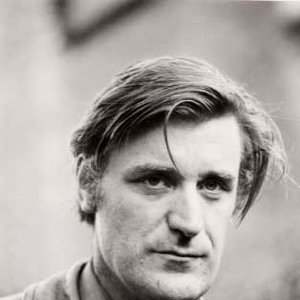
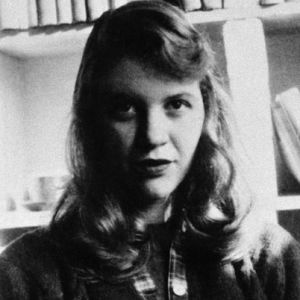
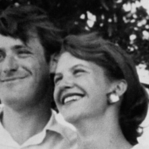

The Backstory
Born to middle class parents in Jamaica Plain, Massachusetts, Sylvia Plath published her first poem
when she was eight. Sensitive, intelligent, compelled toward perfection in everything she attempted,
she was, on the surface, a model daughter, popular in school, earning straight A's, winning the best
prizes. By the time she entered Smith College on a scholarship in 1950 she already had an impressive
list of publications, and while at Smith she wrote over four hundred poems.
In 1956 she married the English poet Ted Hughes , and in 1960, when she was 28, her first book, The
Colossus, was published in England. The poems in this book---formally precise, well wrought---show
clearly the dedication with which Sylvia had served her apprenticeship; yet they give only glimpses of
what was to come in the poems she would begin writing early in 1961. She and Ted Hughes settled for
a while in an English country village in Devon, but less than two years after the birth of their first child
the marriage broke apart.
On February 11, 1963, Sylvia Plath killed herself with cooking gas at the age of 30. Two years later Ariel,
a collection of some of her last poems, was published; this was followed by Crossing the Water and
Winter Trees in 1971, and, in 1981, The Collected Poems appeared, edited by Ted Hughes.
The rural landscape of Hughes’s youth in Yorkshire exerted a lasting influence on his work. To read
Hughes’s poetry is to enter a world dominated by nature, especially by animals. This holds true for
nearly all of his books, from The Hawk in the Rain to Wolfwatching (1989) and Moortown Diary (1989),
two of his late collections. Hughes’s love of animals was one of the catalysts in his decision to become
a poet. According to London Times contributor Thomas Nye, Hughes once confessed that he began
writing poems in adolescence, when it dawned upon him that his earlier passion for hunting animals
in his native Yorkshire ended either in the possession of a dead animal, or at best a trapped one.
Though Hughes is now unequivocally recognized as one of the greatest poets of the 20th century, his
reputation as a poet during his lifetime was perhaps unfairly framed by two events: the suicide of Plath
in 1963, and, in 1969, the suicide of the woman he left Plath for, Assia Wevill, who also took the life of
their young daughter, Shura. As Plath’s executor, Hughes’s decision to destroy her final diary and his
refusal of publication rights to her poems irked many in the literary community. Hughes’s unpopular
decisions regarding Plath’s writings, over which he had total control after her death, were often in
service of his definition of privacy.It was with great surprise that, in 1998, the literary world received
Hughes’s quite intimate portrait of Plath in the form of Birthday Letters, a collection of prose poems
covering every aspect of his relationship with his first wife.
After an acclaimed start as a poet and while an undergraduate at Smith College, Plath attempted suicide.
At age 20, she took 48 sleeping pills during a stint guest-editing Mademoiselle. She was hospitalized,
recovered, and went on a Fulbright Scholarship to Cambridge. There, in 1956, she met Ted Hughes, also a
"promising" poet. Four months after their first encounter, in which Plath bit a chunk out of Hughes' cheek,
they married. Each pursued careers as poets, and she bore two children. In October 1962, Hughes moved
out of their house to pursue an affair with Assia Gutmann Wevill, a family friend. Four months later, Plath
killed herself. After her death, Hughes retained all rights to her work and withheld them form the public.


